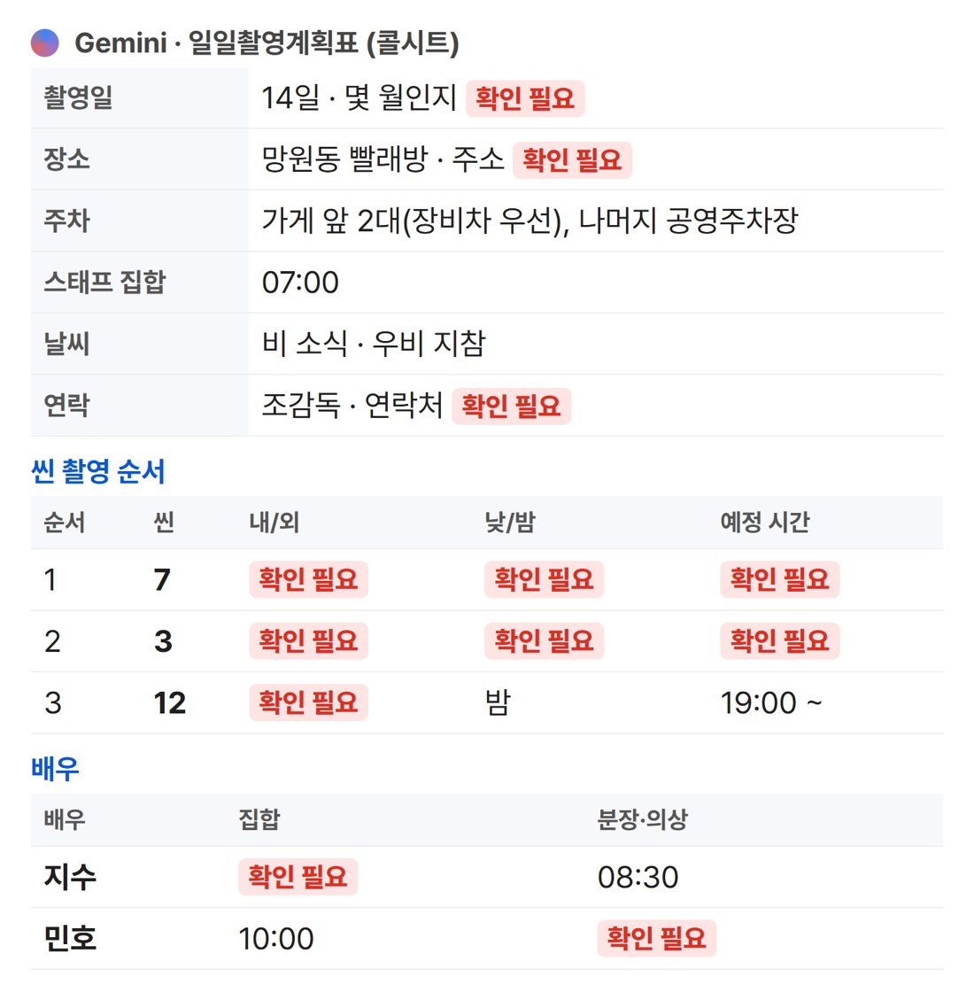

촬영 전날 공지를 붙여넣으면 계획표 한 장으로 정리되고, 빠진 정보는 '확인 필요'로 드러나요. 무료 제미나이로 직접 돌려 봤어요.
한눈에
'지어내지 마' 한 줄이 핵심이에요. 없으면 AI가 빈칸을 그럴듯하게 채워요
예시 공지 한 통에서 '확인 필요'가 21칸 나왔어요
보내기 전에 빈칸을 채우는 용도예요. 최종본은 조감독이 확인하세요
배우·스태프 연락처, 집 주소 같은 개인정보는 AI에 넣지 마세요
이렇게 나와요
'내일 망원동 빨래방, 스태프 7시, 씬 7→3→12, 비 소식' 정도의 흔한 공지를 넣었어요. 주차·식사·날씨는 정리해 줬고, 몇 월인지·정확한 주소·씬별 실내/실외·배우 도착 시간처럼 공지에 없던 건 전부 '확인 필요'로 남겼어요.

제미나이 실제 결과(일부) · 빨간 칸이 공지에 없던 정보
프롬프트
[단톡방 공지] 아래에 공지를 그대로 붙여넣으세요. 연락처는 지우고 넣으세요.
프롬프트
아래 단톡방 공지를 촬영 하루치 일일촬영계획표(콜시트) 한 장으로 정리해줘.
1) 맨 위: 촬영일 · 장소와 주소 · 주차 · 스태프 집합 시간 · 날씨 메모 · 연락 담당
2) 씬 표: 촬영 순서 | 씬 번호 | 내/외 | 낮/밤 | 내용 | 출연 | 예정 시간
3) 배우 표: 배우 | 집합 | 분장·의상 | 촬영 투입 씬
4) 식사·이동 시간
규칙: 공지에 없는 정보는 지어내지 말고 칸에 '확인 필요'라고 써줘. 맨 끝에 공지에서 빠져서 조감독에게 물어봐야 할 것 목록.
[단톡방 공지]
(공지를 그대로 붙여넣으세요)
이 공지에서 빠져 있던 것 (AI가 뽑은 질문)
'주소는 링크 다시 올릴게요'처럼 나중에 줄 정보는 공지에서 제일 잘 빠져요. 계획표 칸을 먼저 만들고 채우면 안 빠져요.
몇 월인지, 촬영장 정확한 주소, 조감독 연락처
씬 7·3·12의 실내/실외, 7·3번의 낮/밤, 씬 내용과 출연 배우
7·3번 촬영 시작 시간, 이동 시간
지수 배우 현장 도착 시간, 민호 배우 분장 시작 시간, 배우별 투입 씬
엑셀 양식
기본 정보 9칸(회차·주소·주차·집합·날씨·비상연락·가까운 병원 등), 씬 순서 8줄, 배우 5줄, 시간표 8줄이 들어 있어요. 칸 구성은 팀 양식에 맞게 고쳐 쓰세요.